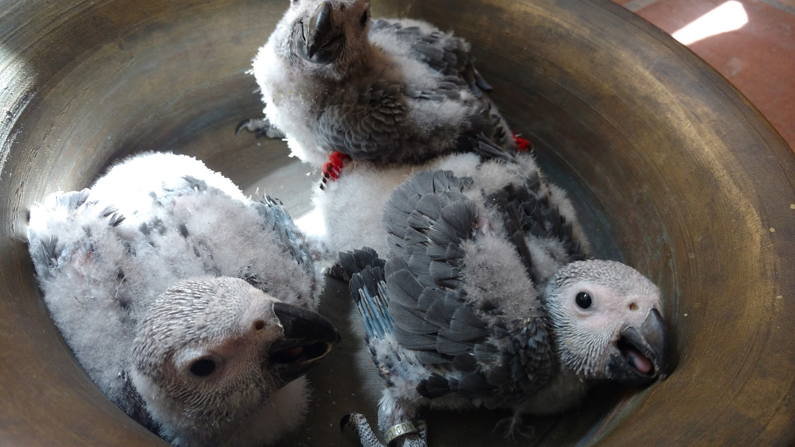

Especialidad
Loro Gris Africano (Yaco)
El Yaco es conocido por su extraordinaria inteligencia y capacidad de vínculo. En mi aviario, las crías se manipulan desde pequeñas para garantizar una socialización óptima.
- ✓ Cría a mano
- ✓ Socialización temprana
- ✓ Ambiente familiar
- ✓ Documentación CITES